Home
Research
Publications
The Group
Current Group
Group Alumni
Photos
Support
Publications
(39)
Steinhardt, R. C.; O’Neill, J. M.; Rathbun, C. M.; McCutcheon, D. C.; Paley, M. A.; Prescher, J. A. Design and synthesis of an alkynyl luciferin analog for bioluminescence imaging,
Chem. Eur. J.
2016
,
22
, 3671-3675. 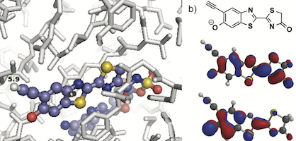
(38)
Nazarova, L. A.; Ochoa, R. A.; Jones, K. A.; Morrissette, N. M.; Prescher, J. A. Extracellular Toxoplasma gondii tachyzoites metabolize and incorporate unnatural sugars into cellular proteins,
Microbes Infect.
2015
,
18
, 199-210.
(37)
Shih, H.-W.; Prescher, J. A. A bioorthogonal cyclopropene ligation mediated by triarylphosphines.
J. Am. Chem. Soc.
2015
,
137
, 10036-10039.
(36)
Patterson, D. M.; Prescher, J. A. Orthogonal bioorthogonal chemistries.
Curr. Opin. Chem. Biol.
2015
,
28
, 141-149.
(35)
Porterfield, W. B.; Jones, K. A.; McCutcheon, D. C.; Prescher, J. A. A "caged" luciferin for imaging cell-cell contacts.
J. Am. Chem. Soc.
2015
,
137
, 8656-8659. 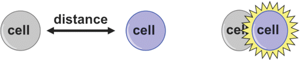
(34)
Kamber, D. N.; Liang, Y.; Lopez, S. A.; Houk, K. N.; Mehl, R. A.; Prescher, J. A. 1,2,4-Triazines are versatile bioorthogonal reagents.
J. Am. Chem. Soc.
2015
,
137
, 8388-8391. 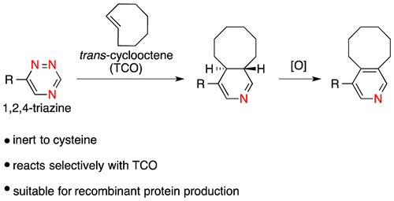
(33)
Jones, K. A.; Li, D. J.; Hui, E. E.; Sellmyer, M. A.; Prescher J. A. Visualizing cell proximity with genetically encoded bioluminescent reporters.
ACS Chem. Biol.
2015
,
10
, 933-938. 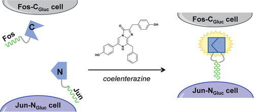
(32)
McCutcheon, D. C.; Porterfield, W. B.; Prescher, J. A. Rapid and scalable assembly of firefly luciferase substrates.
Org. Biomol. Chem.
2015
,
13
, 2117-2121. 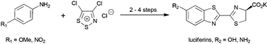
(31)
Porterfield, W. B.; Prescher, J. A. Tools for visualizing cell-cell interactomes.
Curr. Opin. Chem. Biol.
2015
,
24
, 121-130. (invited article for "Omics" issue)
(30)
Smith, B. R.; Ghosn, E. E.; Rallapalli, H.; Prescher, J. A.; Larson, T.; Herzenberg L. A.; Gambhir, S. S. Selective uptake of single-walled carbon nanotubes by circulating monocytes for enhanced tumour delivery.
Nat. Nanotechnol
2014
,
9
, 481-487.
(29)
Shih, H.-W.; Kamber, D. N.; Prescher, J. A. Building better bioorthogonal reactions.
Curr. Opin. Chem. Biol.
2014
,
21
, 103-111. (invited article for “In Vivo Chemistry” issue)
(28)
Patterson, D. M.; Jones, K. A.; Prescher, J. A. Improved glycan imaging with modified cyclopropene chemical reporters.
Mol. BioSys.
2014
,
10
, 1693-1697. (invited article for “Emerging Investigators” issue)
(27)
Patterson, D. M.*; Nazarova, L. A.*; Prescher, J. A. Finding the right (bioorthogonal) chemistry.
ACS Chem. Biol.
2014
,
9
, 592-605. 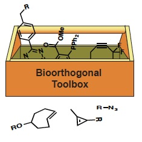
(26)
Evans, M. S.; Adams, S. T.; Reddy, G. R.; Paley, M. A.; Aronin, N.; Prescher, J. A.*; Miller S. C.* A synthetic luciferin improves bioluminescence imaging in live mice.
Nat. Methods
2014
,
11
, 393-395.
(25)
Paley, M. A.; Prescher, J. A. Bioluminescence: A versatile technique for imaging cellular and molecular features.
MedChemComm
2014
,
5
, 255. 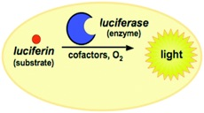
(24)
Kamber, D. N.; Nazarova, L. A.; Liang, Y.; Lopez, S. A.; Patterson, D. M.; Shih, H.-W.; Houk, K. N.; Prescher, J. A. Isomeric cyclopropenes exhibit unique bioorthogonal reactivities.
J. Am. Chem. Soc.
2013
,
135
, 13680-13683. 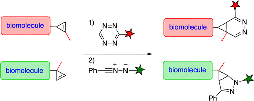
(23)
Sellmyer, M. A.; Bronsart, L.; Imoto, H.; Contag, C. H.; Wandless, T. J.; Prescher, J. A. Visualizing cellular interactions with a generalized proximity reporter.
Proc. Natl. Acad. Sci. U.S.A.
2013
,
110
, 8567-8572. 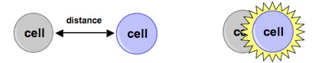
(22)
Patterson, D. M.; Nazarova, L. A.; Xie, B. J.; Kamber, D. N.; Prescher, J. A. Functionalized cyclopropenes as bioorthogonal chemical reporters.
J. Am. Chem. Soc.
2012
,
134
, 18638-18643. 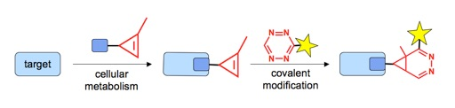
(21)
McCutcheon, D. C.; Paley, M. A.; Steinhardt, R. C.; Prescher, J. A. Expedient synthesis of electronically modified luciferins for bioluminescence imaging.
J. Am. Chem. Soc.
2012
,
134
, 7604-7607. 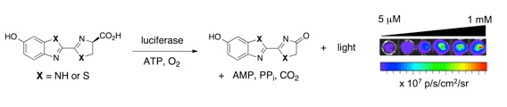
(20)
Prescher, J. A.; Contag, C. H. Imaging mouse models of human cancer. In “Genetically Engineered Mice for Cancer Research,” 2011, Eds (Springer): Green, J. and Ried, T.